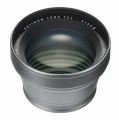

专用望远转换镜头，它通过将固定焦距乘以约1.4倍，将其转换为50mm（相当于35mm格式），来缩窄视角。 此镜头可用于各种环境，如利用自然视角拍摄的肖像，或者以近达14cm距离进行微距拍摄。当TCL-X100 II安装到X100F上后，相机会自动识别转换镜头并校正色差。
抢个沙发吧，总的来说，如果你是个标头爱好者，又买了X100，这个附加镜基本还是必买的，除非你不知道有这个小东西的存在。
1.可以将x100系列的镜头焦距转换成50/2，光圈无损，画质也基本没有降低。大底定焦便携相机只有富士X100系列能享受到； 2.分辨率足够，变形控制得挺好（前提是打开机身内的长焦附加镜选项，机身会自动校正畸变）； 3.造型、涂层都和机身一致，装在X100系列上和机身本身的镜头融为一体，不知道的根本看不出来装了附加境； 4.貌似装上后可以维持10cm的最近对焦距离，降低了广角的透视畸变且增加了微距放大比？对微距爱好者来说是个好事，只是我不拍微距没怎么体验到这方面的好处。
1.性价比低，我在WCL-X100的评论里说WCL-X100性价比很高，但是这个附加镜却反过来，为什么呢，因为它虽然和WCL-X100一样基本无损画质和也不降低光圈，可以当成一颗50/2的镜头来看，但毕竟一般来说广角比标头贵，WCL-X100反而比它便宜好几百，各家全画幅的50/1.8标头基本也就几百块，何况它只是个没有马达结构，等效50/2的附加镜；如果不是标头爱好者，没必要专门为了增加焦段买这个头； 2. X100系列的设计，要想用UV得加转接环，而要装上这个附加镜，就得先把转接环从机身上拧下来，再把这个头拧上去，如果没有另配UV，还得把UV从转接环上转下来再装在这个头上，操作略繁琐，单手操作很难完成； 3. 这个附加镜本身畸变不小，但是除了X100F，之前3代机身用这个附加镜都必须在机身里手动选择长焦附加镜，机身才会自动校正畸变，但是使用中常常忘记打开，导致畸变较大需要后期校正； 4. 体积重量以附加镜来说显得过大了点（67MM口径），何况等效也就是个50/2的镜头，携带远不如WCL-X100方便； 5. 这条只针对我这样非标头粉来说，这个附加镜只能扩展到50MM，配上以标头来说并不算大的F2，虚化和35MM比并没有质的改变，加上X100系列本身是APS-C画幅，拍人像，特别是全身人像，虚化是非常不够的。如果是一只2X增距镜，将焦距增加到70MM，我想实用性会更大一些。